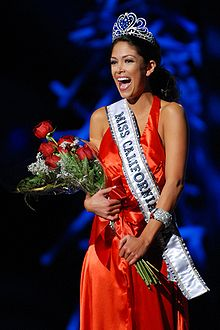

Johnson, the daughter of Annette, a science teacher, and Richard, a pharmaceutical sales manager, was born in Colorado Springs, Colorado, spent her early childhood in Pennsylvania, and moved to Westlake Village, California, prior to starting middle school.[5][6] She graduated from Westlake High School in 2003.[7] When Johnson was 17, she read an advertisement in the Thousand Oaks Acorn for Miss California Teenager. Johnson, a Moorpark College student at the time, wanted to transfer to the University of Southern California and thought the scholarship would help pay her education. Out of 304 contestants Johnson took first runner-up.[
In 2007, Johnson graduated with honors from the University of Southern California with a Bachelor of Arts in Communication, concentrating in sports and entertainment.[8][9] After previously being first runner-up in the 2007 pageant,[6] Johnson won the Miss California USA 2010 title in November 2009 by outgoing titleholder (and Miss Teen USA 2003) Tami Farrell.[10] She went on to compete in the Miss USA 2010 pageant held in Las Vegas where she placed ninth.[8] She had been considered a favorite to win the title.[11]